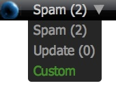
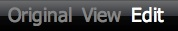

Edit any website and share changes.
Firefox/Safari Drag this to your bookmarks bar.
Chrome Enable “Always Show Bookmarks Bar” and then drag to the bookmarks bar.
IE Right-Click and select “Add to Favorites”
Opera Right-Click and select “Bookmark Link”
Demo Try out Wikify on this site simply by clicking the button.
Imagine applying the collaborative wiki content model to all static content on the internet, allowing the community to exchange ideas, update content, fix errors, parody, and improve the internet as a whole.
Wikify makes this all possible through a simple bookmarklet that enables users to easily contribute to arbitrary websites. The edits are stored onto the Wikify servers, where other Wikify users can retrieve the edits, view and contribute more.


Channels are used to distinguish different kinds of edits. The menu displays the channel name alongside the number of edits it contains. Spam should usually contain parody and other non-constructive edits while Update should contain more constructive ones. Pressing Custom allows the user to create new channels.
The Logo can be clicked on to minimize the toolbar.
Modes include Original, which displays a read-only version the original web page with no changes, View which contains a read-only version of the web page, with the edits of the specified channel included, and Edit which is basically View with the ability to edit the text, WYSIWYG style.
Buttons are located on the right side of the Wikify toolbar. The floppy-disk icon means Save and stores the edits made through the Edit mode to the selected current channel. The information icon is Help, which brings up an interactive system for showing what each icon means. Finally, the notepad shows News or the latest edits on this page, site and over the entire Wikify network.
Bookmarklets are pieces of code that live as a Bookmark and can modify contents of webpages when they are explicitly called by a user through the act of clicking on them. They are cross-browser, instead of how usual browser extensions only work with a single browser.
Overview. The bookmarklet takes the page and enables an edit mode and adds a toolbar. Saving uses code to store only the changes to the page and nothing more, and loading them retrieves the changes and applies them to the page.
Triggering the bookmarklet starts the loading process where the current page code is copied and the page is swapped with a toolbar and a blank iframe. The iframe is filled in with the page contents and the HTML design view mode is enabled, allowing the users to do editing. An object is filled with a list of every node within the page (this is useful later with saving) associated with its relative ID (discussed in the next section). A JSONP request is created to retrieve a list of all the contributions associated with that page and they are applied to the page (for View and Edit modes).
Applying the edits is effectively the opposite of Saving the edits. The list of updates are iterated through and are identified by what kind of edit it is, a raw content-text replace or a diff. The former involves using the associated node-ID to replace the innerHTML. To apply the diff type, the node ID is traced and the content text of the element is copied and fed into the patch method of the diff-match-patch library and the output is used to replace the innerHTML of the affected node.
Saving is where the majority of the code is. For efficiency and potentially legal copyright-related reasons, the system tries very hard to store the lowest possible amount of data from the original website as possible. Since the HTML is rendered as a tree, the document object model, it can be traversed and each node (containing text) can be identified relatively using its parents. A new object is created with a list of every node within the page containing a copy of their content text (excluding the markup of the child nodes), similar to the system used during the initialization. The original and the new objects are compared to create a list of objects which have changed. Each item which was changed then is diffed using google-diff-match-patch. The length of the resulting diff is compared with the length of the raw text of the new item, and whichever one is smaller is sent to the server.
Sending to the server is unusually hard because of the fact it will almost always involve cross-domain requests. JSONP imposes limits on the maximum change size and AJAX doesn’t work across multiple domains consistently across browsers. To send, the system creates an artificial form element and populates the fields, setting the target to a new small iframe. The form is automatically submitted and once the iframe triggers something, the status is pulled back using JSONP.
How it works.
Userscripts are like Bookmarklets, but they are closer to browser extensions and run automatically on every page loaded without any other user interaction.
More.

Changes do not affect people who do not use Wikify
Designed and built by antimatter15 in 2008. Site redesigned in 2009.